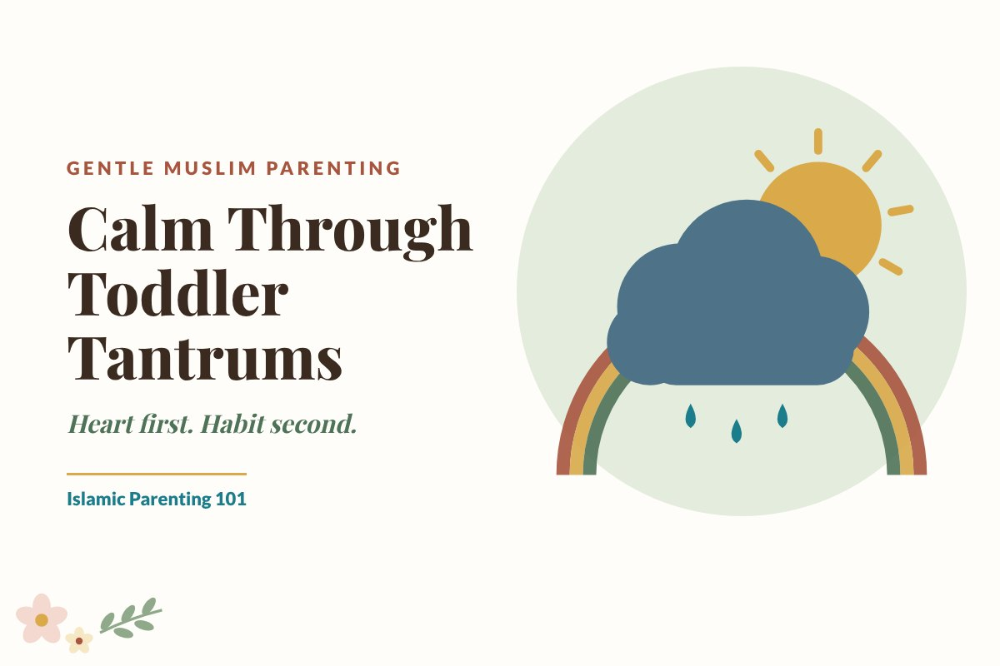
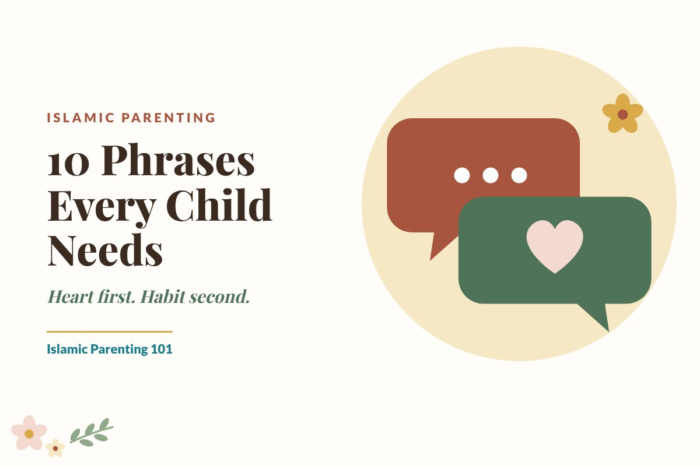

All posts
Gentle, Sunnah-rooted help for everyday parenting moments.
No posts match that yet. Try another word, or ask me to write about it.

Daily Duas for Kids: 12 Easy Duas Every Muslim Child Can Learn
Daily duas for kids — 12 short, authentic supplications for eating, sleeping, leaving home and more, with meanings and simple ways to teach them.

Gentle Parenting in Islam: The Complete Guide for Muslim Moms
Gentle parenting in Islam explained — what the Quran and Sunnah teach about mercy, boundaries and discipline, with real scripts for everyday moments.

How to Get Kids Up for Fajr Without a Fight
How to get kids up for Fajr gently — sleep tips, a calm wake-up routine, the Sunnah's example and scripts by age, so mornings stop being a battle.

How to Discipline a Child in Islam: Gentle, Firm and Fair
How to discipline a child in Islam without hitting or shaming — the Prophet's example, clear boundaries, fair consequences and scripts by age for Muslim moms.

Islamic Parenting: The Complete Guide for Muslim Moms
Islamic parenting explained simply — the Quran and Sunnah foundations, daily habits, discipline, faith and character, with real scripts for Muslim moms.

Muslim Mom Burnout: 9 Gentle Ways to Rest and Recover
Muslim mom burnout is real. Learn the signs, what Islam says about rest and limits, and 9 gentle, practical ways to recover without guilt.

How to Teach Kids About Allah: Love First, Always
How to teach kids about Allah with love, not fear — simple words by age, stories, Allah's names, answers to hard questions and everyday habits for Muslim moms.

How to Teach Kids to Fast in Ramadan (Gently, by Age)
How to teach kids to fast in Ramadan gradually — signs of readiness, practice fasts by age, suhoor and iftar tips, safety and what the Sunnah says.

How to Teach Quran to Kids at Home: A Gentle Guide
How to teach Quran to kids at home — a simple daily routine, ideas by age, memorisation tips and what the Sunnah says, for busy Muslim moms.

Toddler Tantrums: A Gentle Islamic Approach for Muslim Moms
Toddler tantrums in Islam — why they happen, what the Sunnah teaches about patience and mercy, and a calm step-by-step plan with scripts for ages 1–4.

How to Teach Kids Salah: A Complete Guide by Age
How to teach kids salah the gentle way — what to do from toddler to teen, the Sunnah behind it, real scripts and a simple routine you can start tonight.

Ramadan with Kids: The Complete Guide for Muslim Moms
Ramadan with kids made joyful — how to prepare, what to do by age, simple traditions, fasting tips and a month-long plan for a calm, meaningful Ramadan.

10 Phrases Every Child Needs to Hear (Muslim Mom Edition)
10 phrases every child needs to hear from their Muslim mother — words of love, safety and encouragement, with Sunnah examples and when to say them.

How to Stop Yelling at Your Kids: 7 Sunnah Steps
How to stop yelling at your kids, the Prophetic way — 7 Sunnah steps to calm down before you correct, with real scripts for tired Muslim moms.